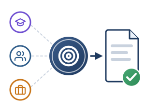

1Definizione
2Pianificazione
3Adozione
4Monitoraggio
5Conclusione

Dai bisogni all’obiettivo, fino alla delibera nel PTOF
Analisi del contesto e approvazione iniziale
D.M. 166/2025, par. 4.1, punto 1
- La scuola, nella propria autonomia (D.P.R. 275/1999), valuta la maturità digitale: infrastrutture, connettività, competenze.
- Individua i bisogni prioritari nei tre ambiti: studenti, docenti, organizzazione.
- Coinvolge gli stakeholder (SEP), secondo la metodologia HUDERIA.
- Atto di Indirizzo del Dirigente (L. 107/2015, art. 1, c. 14) e delibera nel PTOF di Collegio dei Docenti e Consiglio d’Istituto.
Esempio: un tutor virtuale per le classi seconde
Istituto Comprensivo · secondaria di primo grado
- Il RAV rileva fragilità nella comprensione del testo e nelle discipline STEM.
- Il Dirigente emana un Atto di Indirizzo: sperimentare l’IA generativa per personalizzare l’apprendimento.
- Il Collegio sceglie il caso d’uso: un tutor virtuale di lettura e logica matematica.
- L’iniziativa è approvata e inserita nell’aggiornamento del PTOF.